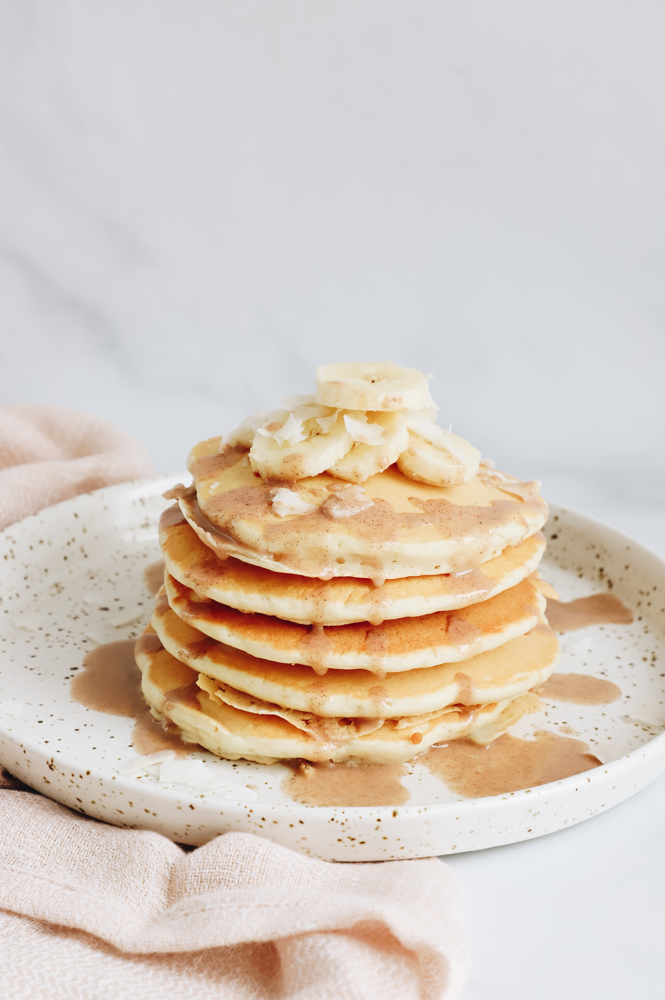

Easy pancake recipe

Description
This simple and delicious pancake recipe is perfect for a Sunday morning breakfast when you want to treat yourself with a nice and cosy meal.
The best part is that you can have fun with the toppings, you can eat these pancakes with: butter, bananas, peanut butter, jam and more.
Ingredients
- 2 eggs
- 300 ml of milk
- 1 tsp of vanilla essence
- 100 gr of flour
- 1 tsp of sugar
- 50 gr of butter, plus extra for frying
Steps
- Whisk eggs, milk and vanilla together.
- Sift flour into a bowl and stir in sugar.
- Add in milk and egg mixture and whisk well until combined.
- Heat a pan over medium heat and grease it with butter.
- Using a ladle, pour in the mixture.
- Cook until bubbles form on the surface, turn it and cook for 1-2 minutes.
- Transfer to a plate and serve.